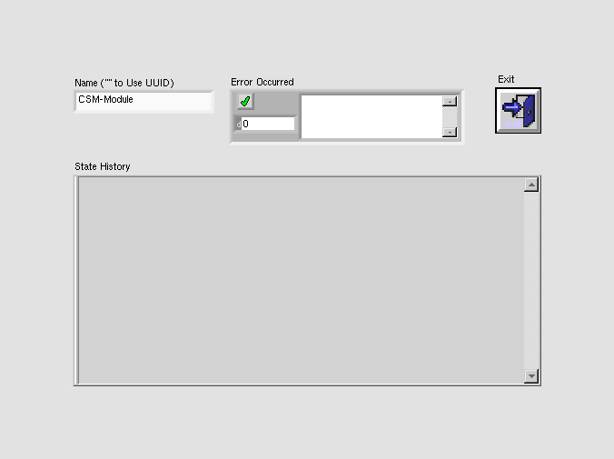
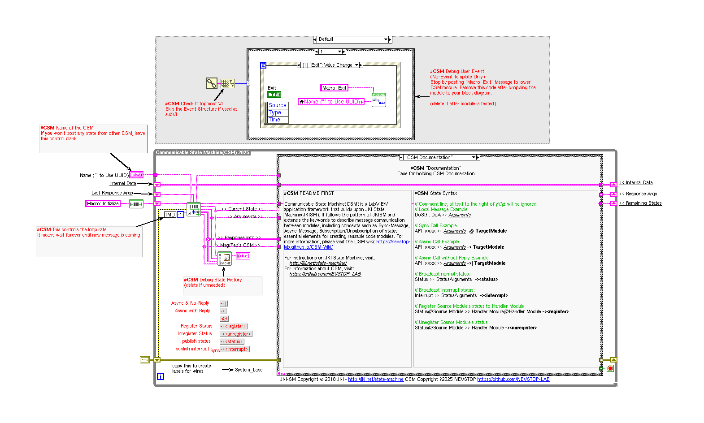

LabVIEW VI Comparison Report
06:59:26 10/29/2026
First VI: /workspace-base/src/user.lib/_NEVSTOP/Communicable State Machine(CSM)/CSM Module Template.viSecond VI: /workspace/src/user.lib/_NEVSTOP/Communicable State Machine(CSM)/CSM Module Template.vi
| Front Panel Overview | ||
|
 |

| |
| Block Diagram Overview | ||
|
 |

|
- Front Panel
- Front Panel Position/Size
- Block Diagram Functional
- Block Diagram Cosmetic
- VI Attribute
Detailed Information
1. VI Attribute - Documentation (VI Properties)
- description text : changed from "A template for creating a CSM module without a user interface. This is the most commonly used CSM template. The template also includes an event response loop used for exiting the module during debugging. Remove this loop after debugging is complete. > [!NOTE] CSM Naming Rules > > - CSM module name must be unique. Otherwise, CSM enters a `Critical Error` state. > - If the input module name is an empty string (""), the system uses a UUID as the module name. Such a module is marked as standalone mode and does not appear in the module list. > - Worker Mode Rule: If the input module name ends with `#`, a worker mode node will be instantiated. Multiple worker mode nodes can form a worker mode module. > - Chain of Responsibility Mode Rule: If the input module name ends with `$` followed by a number, a chain of responsibility mode node will be instantiated. Multiple chain of responsibility mode nodes can form a chain of responsibility mode module. Smaller numbers mean higher priority, and messages are routed directly to the highest-priority node that can handle them. > - System-Level Module Rule: If the input module name starts with `.`, the module is a system-level module. Under default settings, such modules are not listed by the CSM - List Modules VI and are suitable for instantiating modules that run in the background. > - Submodule Rule: `.` is also allowed in a module name to separate the module name into multiple parts. CSM does not have strict rules for submodules. The `.` in the module name only marks the logical relationship between different modules. From an execution perspective, they are considered independent modules. The only difference is that you can obtain a list of logical submodules via the CSM - List Submodules VI. > [!WARNING] Multiple CSMs in a Single VI > > - It is not recommended to place multiple (>=2) CSMs in a flat layout within a single VI. While this will not cause logical issues in the program, it will prevent the CSM Debug Console from loading all the inner and outer interfaces of the flat CSMs in that VI - only one will be loaded. -- Controls -- - Name ("" to use UUID): CSM module name. Refer to CSM Naming Rules for module naming rules." to "A template for creating a CSM module without a user interface. This is the most commonly used CSM template. The template also includes an event response loop used for exiting the module during debugging. Remove this loop after debugging is complete. > [!NOTE] CSM Naming Rules > > - CSM module name must be unique. Otherwise, CSM enters a `Critical Error` state. > - If the input module name is an empty string (""), the system uses a UUID as the module name. Such a module is marked as standalone mode and does not appear in the module list. > - Worker Mode Rule: If the input module name ends with `#`, a worker mode node will be instantiated. Multiple worker mode nodes can form a worker mode module. > - Chain of Responsibility Mode Rule: If the input module name ends with `$` followed by a number, a chain of responsibility mode node will be instantiated. Multiple chain of responsibility mode nodes can form a chain of responsibility mode module. Smaller numbers mean higher priority, and messages are routed directly to the highest-priority node that can handle them. > - System-Level Module Rule: If the input module name starts with `.`, the module is a system-level module. Under default settings, such modules are not listed by the CSM - List Modules VI and are suitable for instantiating modules that run in the background. > - Submodule Rule: `.` is also allowed in a module name to separate the module name into multiple parts. CSM does not have strict rules for submodules. The `.` in the module name only marks the logical relationship between different modules. From an execution perspective, they are considered independent modules. The only difference is that you can obtain a list of logical submodules via the CSM - List Submodules VI. > [!NOTE] CSM Initialize State ("Macro: Initialize") > > - The default value is `Macro: Initialize`, which is consistent with the JKISM state machine. > - This state is used to initialize the state machine of a CSM module. A CSM module will process externally sent messages only after completing this macro state. > [!NOTE] CSM Exit State ("Macro: Exit") > > - The default value is "Macro: Exit", which is consistent with the JKISM state machine. > - This state is used to exit the state machine of a CSM module. After entering this state, a CSM module no longer processes externally sent messages. > [!WARNING] Multiple CSMs in a Single VI > > - It is not recommended to place multiple (>=2) CSMs in a flat layout within a single VI. While this will not cause logical issues in the program, it will prevent the CSM Debug Console from loading all the inner and outer interfaces of the flat CSMs in that VI - only one will be loaded. -- Controls -- - Name ("" to use UUID): CSM module name. Refer to CSM Naming Rules for module naming rules."